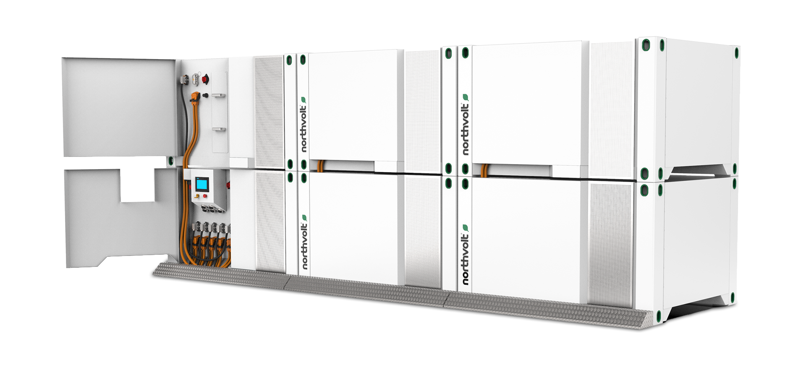

1
Map data paths
Trace data from cell tests, Voltpack units, LytenCloud, and customer spec requests into one clear backlog.
Lyten is pushing battery systems, lithium-sulfur work, and LytenCloud visibility. That move needs clean backend paths from engineering data to customer proof.
Saw the Backend Engineer signal. That usually means the product team needs more capacity for APIs, data flows, integrations, and reliable releases.
See the pilot
Our read
Your backend hiring signal points to more than one missing developer. Lyten is restarting battery production while adding LytenCloud and factory data paths. Those systems must link cells, packs, specs, orders, and field data. If backend work trails the ramp, engineers carry data by hand. That slows demos, customer proof, and line learning.
What we'd do
Engagement model: a dedicated squad under Lyten's product owner or engineering manager, with a weekly demo cadence.
Trace data from cell tests, Voltpack units, LytenCloud, and customer spec requests into one clear backlog.
Create API services for equipment events, battery records, documents, and partner access, with audit trails ready for regulated buyers.
Add dashboards and alerts for line status, test exceptions, fleet health, and handoffs between Sweden, Poland, and San Jose.
Run weekly demos, load tests, and QA checks so Lyten keeps code ownership after the pilot.
Who is Elinext
Elinext is a full-cycle software development company, active since 1997, with about 700 in-house specialists and no freelancers. We work across backend, web, QA, DevOps, AI/ML, and industrial software teams. For Lyten, the fit is regulated engineering work, ISO 9001 and ISO 27001 habits, and long support models. We would plug the squad into your product owner or engineering manager, then ship clear backend increments each week.
Proof

Elinext helped a US MES provider modernize complex factory software and support long-running releases.
Read case study
Elinext built industrial software that collects machine data and turns it into production insight.
Read case studyA short call can define scope, owners, and next steps.
Start the conversation